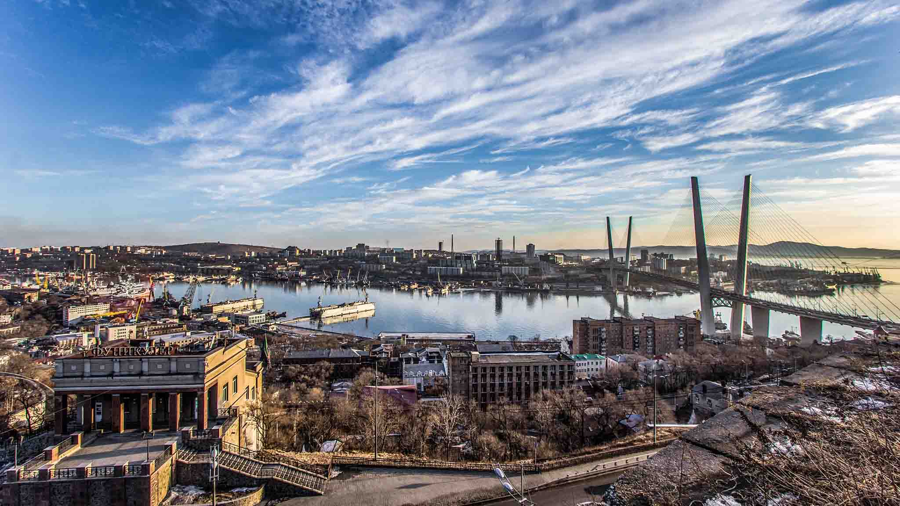
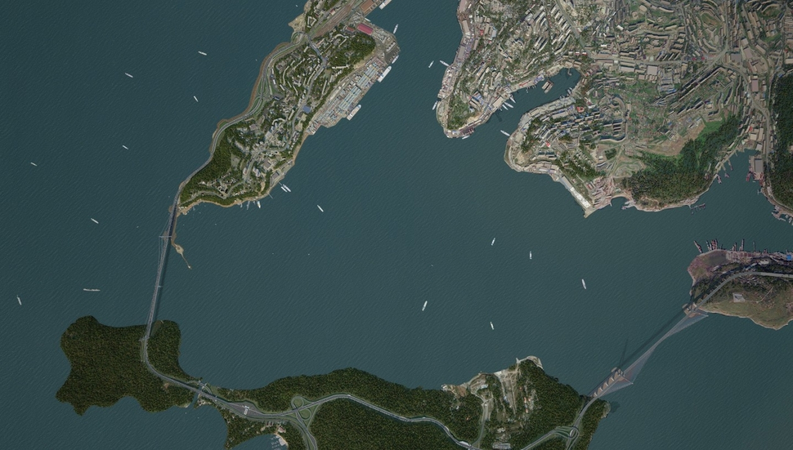
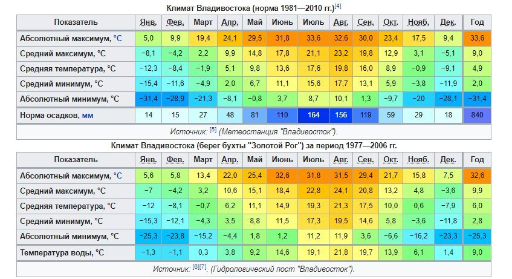
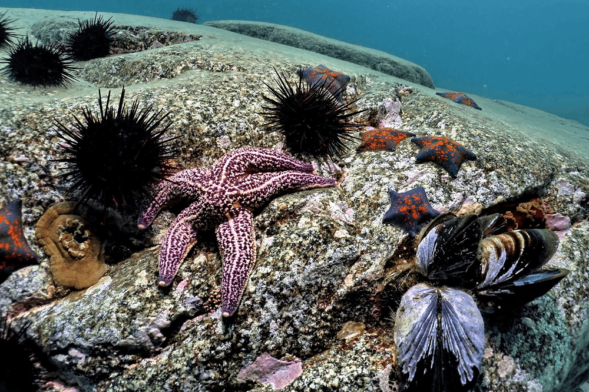
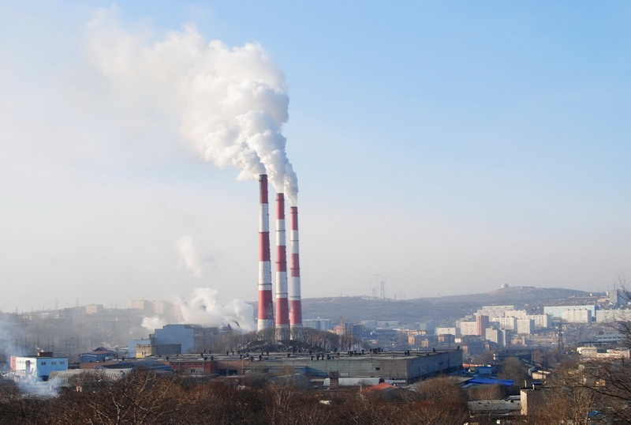

Владивосток
Владивосто́к — город и порт на Дальнем Востоке России; политический, культурный, научно-образовательный и экономический центр региона; административный центр Приморского края, Владивостокского городского округа, а также с 13 декабря 2018 года центр Дальневосточного федерального округа. Расположен на полуострове Муравьёва-Амурского, городу подчинены 5 сельских населённых пунктов и острова в заливе Петра Великого Японского моря.
Конечный пункт Транссибирской магистрали. Один из крупнейших морских портов Дальневосточного бассейна. Главная база Тихоокеанского флота. Крупнейший научно-образовательный центр дальневосточного региона, включающий Дальневосточный федеральный университет и Дальневосточное отделение РАН.
Население — 603 519 чел. (2021 год).
Физико-географическая характеристика
Владивосток занимает полуостров Муравьёва-Амурского. Территория в границах населённого пункта составляет 325,99 км².
Он протянулся на расстояние около 30 км с юга на север и почти 10 км с запада на восток (без полуострова Песчаного), омывается водами Амурского и Уссурийского заливов, входящих в акваторию залива Петра Великого Японского моря.
Город вместе с подчинёнными ему пятью сельскими населёнными пунктами и около 50 островами залива Петра Великого образует Владивостокский городской округ общей площадью 590,14 км², в том числе площадь в границах шести населённых пунктов — 441,05 км².
Самая высокая точка исторической части города — сопка Орлиное Гнездо высотой 199 м над уровнем моря (по другим источникам 214 м). В городской черте вершинами Владивостока являются гора Варгина (458 м) и сопка Холодильник (257 м). На подчинённых Владивостоку территориях, входящих в городской округ, значимой вершиной является гора Русских (291 м) на острове Русском.
Кратчайшее расстояние до Москвы по поверхности Земли (на высоте 0 м над уровнем моря) составляет 6430 километров, по железной дороге — 9288 километров. Расстояние до других, более близких городов: Сеул — 750 км, Токио — 1060 км, Пекин — 1340 км, Гонконг — 2820 км, Манила — 3330 км, Бангкок — 4400 км, Сингапур — 5400 км, Дарвин (Австралия) — 6180 км. Владивосток находится в часовой зоне МСК+7. Смещение применяемого времени относительно UTC составляет +10:00. В соответствии с применяемым временем и географической долготой средний солнечный полдень во Владивостоке наступает в 13:13.
Климат
Климат Владивостока умеренный муссонный. Для него характерна чётко выраженная контрастная смена сезонных воздушных масс. Вместе с тем, климатические условия города являются одними из самых благоприятных на Дальнем Востоке России.
Зимний период (ноябрь—март) отличается морозной, сухой и ясной погодой, чему способствует перемещение сухого холодного воздуха северными и северо-западными ветрами зимнего муссона. Средняя скорость ветра в этот период — 6—9 м/с. Осадков в виде снега выпадает малое количество — 14—24 мм, а влажность воздуха составляет 59—60 %. В первую половину зимы может выпадать обильный, часто мокрый снег, ломающий деревья.
В весенний период преобладают юго-восточные ветры со средней скоростью 6,4 м/с. При высокой влажности, погода остаётся прохладной. Поздней весной случаются моросящие дожди и туманы, количество осадков — в районе 7—26 мм.
Календарное лето во Владивостоке делится на два чётко разделённых периода. Первая половина характеризуется прохладной и пасмурной погодой, с моросящими дождями и туманами. Вторая половина отличается тёплой погодой с преобладающими юго-восточными ветрами при средней скорости 5,3—5,8 м/с. В летний период характерны тайфуны с ливневыми дождями, когда скорости ветра вырастают в 5—8 раз, до 20—35 м/с. Влажность воздуха достигает максимальных отметок в 87—91 %. Климатическое лето продолжается с конца июня до конца сентября.
В первую половину календарной осени преобладает тёплая, сухая и солнечная погода. Для сентября характерны юго-восточные ветры, в октябре-ноябре сменяющиеся северными. Количество осадков к зиме постепенно уменьшается. Первые заморозки обычно наступают в начале ноября.
Флора и фауна
Город расположен на стыке зон высотной поясности и широколиственных лесов. Флора города, расположенного в южной подзоне смешанных хвойно-широколиственных лесов, включает более 1000 видов сосудистых растений: субтропические элементы местной флоры составляют 3 % от общего числа видов, на маньчжурский дубравный комплекс приходится до 70 %, на таёжный — 13 %, на местные аркто-монтанные виды — 1 %.
В числе наиболее распространённых — ясень маньчжурский, ильм японский, берёза плосколистная, ясень носолистный, робиния ложноакациевая, пузыреплодник калинолистный. Местами сохранились древние чернопихтарниковые леса, но в настоящее время преобладают вторичные: дубово-кленово-липовые, на островах — дубово-кленово-берёзовые, в долинах рек — ивняки, ильмовые и ясеневые леса. В пригородных лесах произрастают кедровый орех, лещина, лесные ягоды, грибы, папоротник, черемша, лекарственные растения.
Из птиц в черте города обитают не менее 50 гнездящихся видов, среди них: голуби, воробьи, чернохвостые чайки, белопоясный стриж, сорока, камчатская трясогузка, белобрюхая синица. Из насекомоядных в лесах водятся: амурский ёж, уссурийский крот (могера), тундряная, крупнозубая и большая бурозубки. Из рукокрылых в летнее время и на пролётках отмечены: ночницы, бурый ушан, кожановидный нетопырь, двухцветный кожан, трубконосы. Из зайцеобразных — кустарниковый заяц. Из грызунов — летяга, белка обыкновенная, азиатский бурундук, полевая, лесная и домовая мыши, мышь-малютка, серая и чёрная крысы, ондатра, красно-серая и дальневосточная полёвки. Среди хищников — енотовидная собака, лисица, барсук, ласка, колонок, дальневосточный лесной кот.
Прибрежные воды Владивостока богаты морскими животными. Здесь водятся: сельдь, корюшка, навага, камбала, терпуг, краснопёрка, пеленгас, мидии, трепанги, гребешки, осьминоги и крабы.
Экологическая обстановка
В «Рейтинге экологического развития городов России — 2014», составленном Минприроды России, Владивосток занял 69-е место среди 94 городов-участников. Ранее, в 2013 году, Владивосток занимал в данном рейтинге 45-е место среди 85 городов-участников.
Во Владивостоке в 2014 наблюдался «повышенный» уровень загрязнения воздуха, содержание диоксида азота примерно вдвое превышает предельно допустимую концентрацию (ПДК). Неблагополучное состояние воздуха объясняется большим количеством автотранспорта. Парковка автомобилей на проезжей части способствует загазованности воздуха, поскольку создаёт «пробки». В меньшей степени влияют выбросы производственных объектов, таких как МУПВ Спецзавод № 1 (мусоросжигательный завод), ТЭЦ-1, ТЭЦ-2 и др.
Для Владивостока, с трёх сторон омываемого морем, большой проблемой является высокое загрязнение окружающих его акваторий Амурского и Уссурийского заливов, пролива Босфор Восточный и, особенно, бухты Золотой Рог, которую в декабре 2013 года представитель Росгидромета объявил самой грязной акваторией России.
Так, по данным доклада об экологической ситуации в Приморском крае от 2014 года, поверхность бухты Золотой Рог была покрыта плавающим мусором и нефтяной плёнкой на 91—100 %. При этом концентрация нефтяных углеводородов в воде снизилась, и теперь превышает ПДК в 1,5—2 раза. Биопланктон, обитающий в бухте, ядовит, а употребление в пищу выловленной здесь рыбы — опасно. В 2015 году качество воды в Золотом Роге улучшилось до «умеренно-загрязнённой», а среднегодовая концентрация нефтяных углеводородов снизилась до 1 ПДК. К 2018 году в бухту ежегодно сбрасывается 14,2 млн м³ сточных вод, из них 9,4 млн м³ — без очистки.